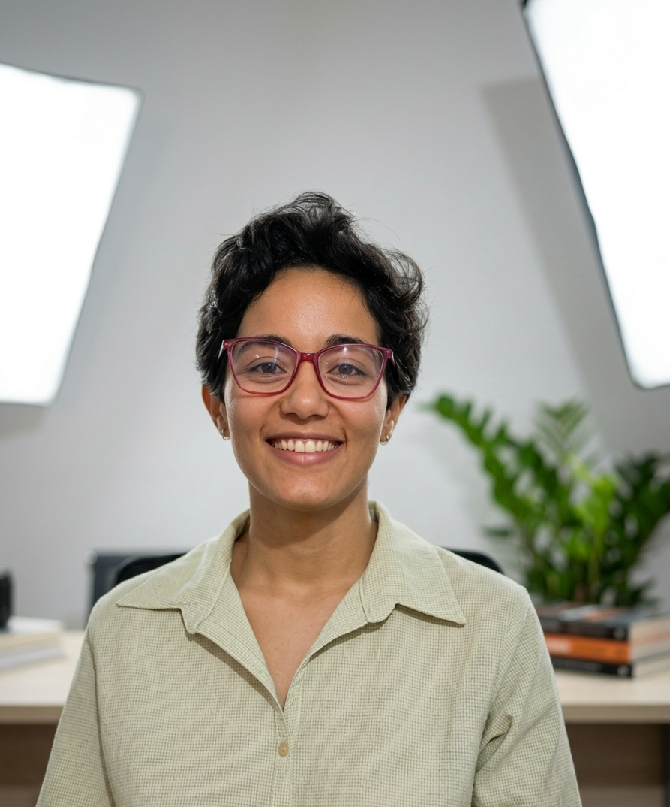

Shaiane Neves
Ingénieure pédagogique | Conceptrice digital learning
Bienvenue dans mon espace numérique – Portfolio de Shaiane Neves. J'ai conçu cet endroit pour partager mes projets en digital learning, ce lieu rassemble mes méthodologies pédagogiques, mes travaux d'études et ma vision de la formation : concevoir, déployer et faire évoluer des dispositifs d'apprentissage concrets et efficaces.
Mon parcours s'est construit à la croisée de l'éducation, en donnant des cours de langues étrangères depuis 2016, et de la technologie, forte de mon expérience professionnelle dans le support client. C’est pourquoi, lorsque j’ai commencé mes études en Master d’Ingénierie pédagogique, j’ai enfin pu réunir ces deux passions.
Mon but actuel est de créer un pont entre pédagogie et technologie, et de continuer à former, soit à distance de manière asynchrone par des modules e-learning, ou bien en aidant des experts métiers à monter en compétences numériques à travers un accompagnement personnalisé et des ateliers.
Ma démarche pédagogique
L'importance des objectifs pédagogiques
Toute formation doit être construite autour d’objectifs précis, sinon on risque de tomber dans la simple transmission d'informations. Pour lancer la conception, je commence par analyser le besoin à travers trois questions clés :
- Quel est le public cible ?
- Quelle sera la modalité de diffusion (présentiel, e-learning, hybride) ?
- À l'issue de cette formation, que sera concrètement capable de faire l'apprenant ?
C'est à partir de ces réponses que je formule des objectifs SMART (Spécifiques, Mesurables, Atteignables, Réalistes et Temporels). C'est la garantie d'une formation alignée sur les besoins réels du terrain.
La progression pédagogique
Pour assurer la bonne progression des activités, j'utilise la taxonomie de Bloom. Mon but est d'amener progressivement l'apprenant au-delà de la simple mémorisation, en le guidant vers la compréhension, l'application pratique, puis l'autonomie.
Le processus global
La structure de mes projets s'appuie sur la méthodologie ADDIE. Ce cadre rigoureux garantit que toutes les phases essentielles — de l'Analyse initiale à l'Évaluation finale, en passant par le Design, le Développement et l'Implantation — soient suivies et validées.
Compétences et outils
Des parcours e‑learning centrés sur l'apprenant, de la scénarisation au déploiement.
-
Scénarisation pédagogique
Objectifs d'apprentissage, storyboards, séquençage modulaire. -
Outils d'auteur & interactivité
Articulate Storyline et Rise (Nouveautés : traduction localisée, Labs et IA), Genially, H5P, Moodle (SCORM / xAPI). -
Production multimédia
DaVinci Resolve, Canva, Vyond, Powtoon, Eleven Labs -
Web & intégration
PHP, JavaScript, HTML, CSS — prototypes, intégrations et adaptations front-end.